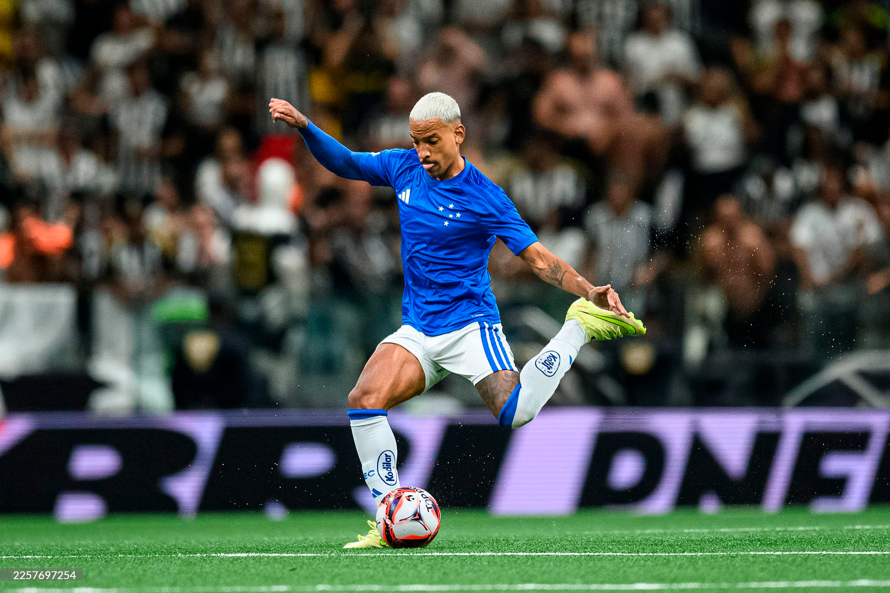
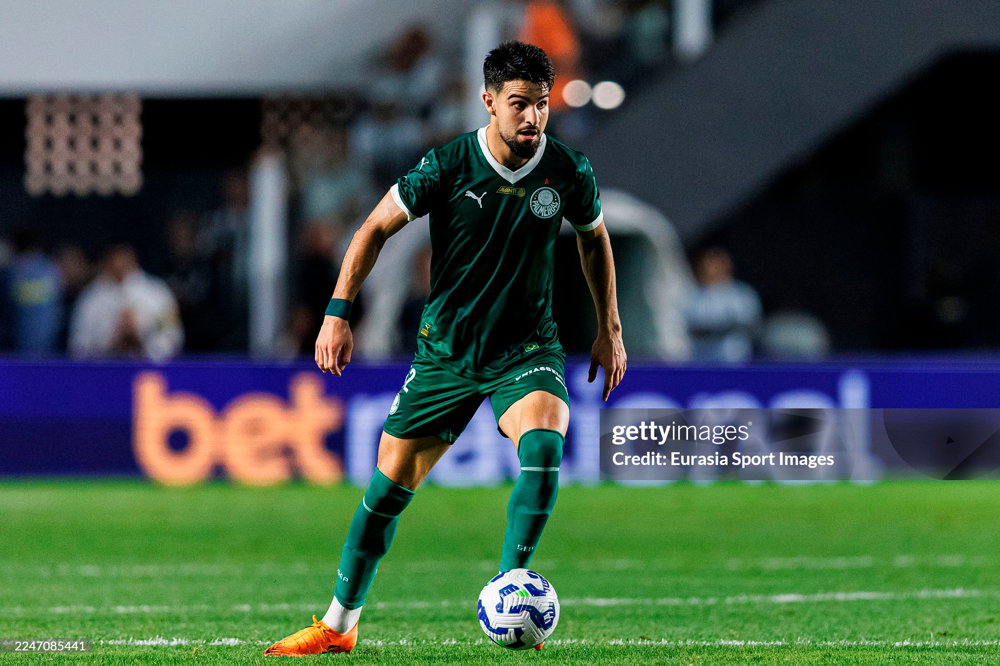
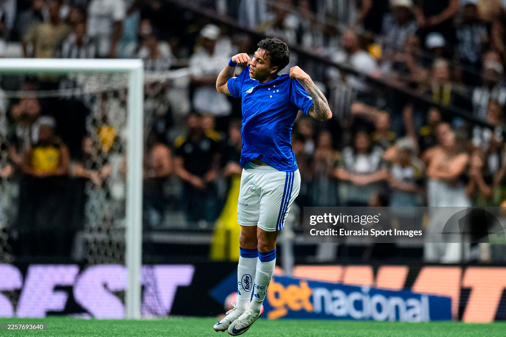

Retenção Longitudinal através de Cartas Colecionáveis
A transição de uma regra promocional textual para uma mecânica visual inspirada em card games esportivos. Como um MVP textual validou o modelo e gerou um salto de 72 para 827 apostas (+1.048%) no Brasileirão.
1. O Contexto & O Problema Real
A Casa de Apostas enfrentava um desafio crônico de retenção entre as partidas do Campeonato Brasileiro. A plataforma possuía promoções semanais, mas elas eram apresentadas como listas textuais densas de termos e condições. O apostador precisava ler parágrafos de regras para entender como participar de uma odd promocional.
O Briefing Original
"Divulgar a promoção do Artilheiro com mais banners na Home e enviar e-mails com as regras da rodada."
O Reframing de Design
O problema não era falta de canais de mídia, mas sim a fricção cognitiva de exigir leitura regulamentar para uma ação lúdica. Era preciso transformar o modelo mental em uma experiência visual imediata.
2. A Hipótese: Validar a Mecânica Antes do Pixel (MVP Textual)
Fiel ao princípio de "Dado antes de adjetivo, método antes de pixel", não desenhamos a interface completa antes de testar a aceitação da regra comercial. Definimos a mecânica:
- O usuário seleciona um atacante artilheiro da rodada.
- Aposta R$ 10 ou mais na odd turbinada do jogador.
- Recebe R$ 10 de aposta grátis (freebet) para cada gol real que o atleta marcar na partida.
Rodamos a Rodada 1 (30/03/2025) no formato textual tradicional como nosso baseline de controle. O resultado foi de 72 apostas (R$ 821,07). A partir da Rodada 2, introduzimos a interface visual de cartas colecionáveis inspiradas no FIFA Ultimate Team.
3. Dados Empíricos: O Histórico das 7 Rodadas
A documentação longitudinal do projeto permitiu rastrear não apenas os picos de sucesso, mas também diagnosticar causas externas de queda com total transparência:
| Rodada | Data | Formato / Evento | Apostas | Volume (R$) |
|---|---|---|---|---|
| Rodada 1 | 30/03/2025 | MVP Textual (Baseline) | 72 | R$ 821,07 |
| Rodada 2 | 06/04/2025 | Lançamento da Interface Visual | 590 (+719%) | R$ 6.128,37 |
| Rodada 3 | 13/04/2025 | Pico de Engajamento | 827 (+1.048%) | R$ 6.790,55 |
| Rodada 4 | 16/04/2025 | Instabilidade técnica do provedor externo | 345 | R$ 2.521,71 |
| Rodada 5 | 20/04/2025 | Atletas escalados com menor apelo popular | 212 | R$ 2.270,83 |
| Rodada 6 | 27/04/2025 | Recuperação com craques em destaque | 628 | R$ 4.383,39 |
| Rodada 7 | 04/05/2025 | Fechamento de ciclo de temporada | 221 | R$ 2.139,81 |
4. Aprendizados & Trade-offs
1. O Design é Dependente da Curadoria Esportiva: A queda de desempenho na Rodada 5 provou que uma interface excelente não compensa a falta de atratividade do conteúdo. A escolha dos atletas precisa de alinhamento estreito entre Design, CRM e Traders esportivos.
2. Resiliência a Falhas de Engenharia: A falha da Rodada 4 demonstrou a importância de estados vazios (*empty states*) informativos e comunicação de fallback quando a integração de odds do provedor falha.
3. O Efeito Multiplicador do Visual: O salto de 72 para 827 participações não exigiu aumento de verba de marketing; decorreu exclusivamente da redução drástica do tempo de entendimento da mecânica através de modelos mentais conhecidos (cards esportivos).
5. Telas & Componentes Visuais (Cards Colecionáveis)
Abaixo, a composição geral da mecânica e os cards individuais de alta fidelidade desenhados para cada atleta participante:
Composição visual da mecânica de cards: linguagem esportiva que substituiu o texto denso de regulamento.
Card promocional do atacante Pedro (Flamengo) com odd e meta de gol.

Card promocional do atacante Hulk (Atlético-MG) em alta definição.

Card promocional de Raphael Veiga (Palmeiras) com detalhamento de freebet.

Card promocional da revelação Estêvão (Palmeiras) com CTA direto.